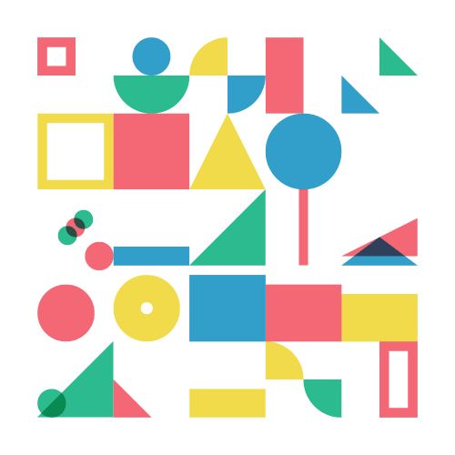

HTML & CSS
task1 零基础HTML编码
task2 零基础HTML及CSS编码（一）
task3 三栏式布局
task4 定位和居中问题
task5 零基础HTML及CSS编码（二）
task6 通过HTML及CSS模拟报纸排版
task7 常见的技术产品官网页面
task8 响应式网格（栅格化）布局
JavaScript
task1 零基础JavaScript编码（一）
task2 零基础JavaScript编码（二）
task3 零基础JavaScript编码（三）
task4 基础JavaScript练习（一）
task5 基础JavaScript练习（二）
task6 基础JavaScript练习（三）
task7 JavaScript和树（一）
task8 JavaScript和树（二）
task9 JavaScript和树（三）
Demos
task1 表单（一）单个表单项的检验
task2 表单（二）多个表单项的动态检验
task3 表单（三）联动
task6 任务六：UI组件之浮出层
综合案例
自定义checkbox，radio样式(一)
自定义checkbox，radio样式(二)
自定义网页右键菜单
鼠标悬停模糊效果
音乐播放器
使用CSS实现折叠面板
实现树形组件
CSS3饼状loading效果
CSS3实现3D轮播图